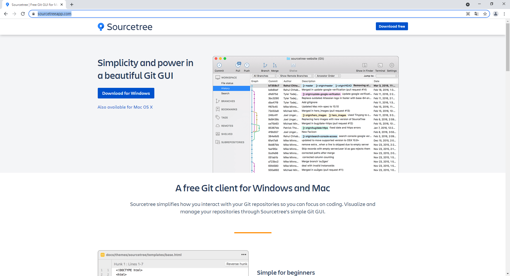
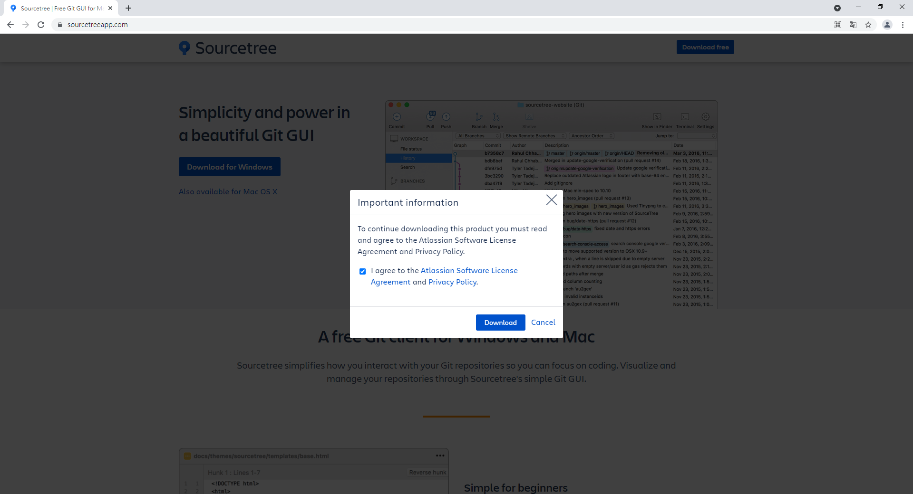
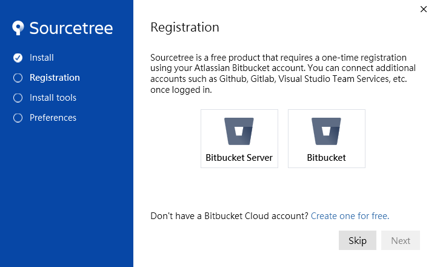
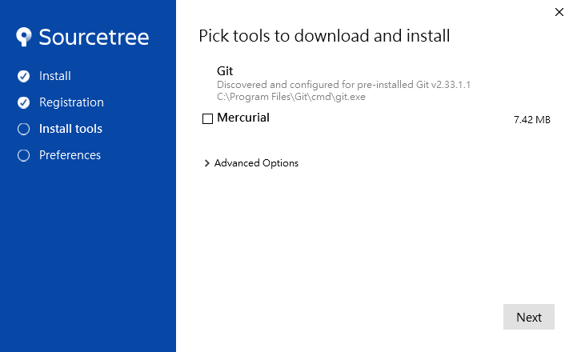
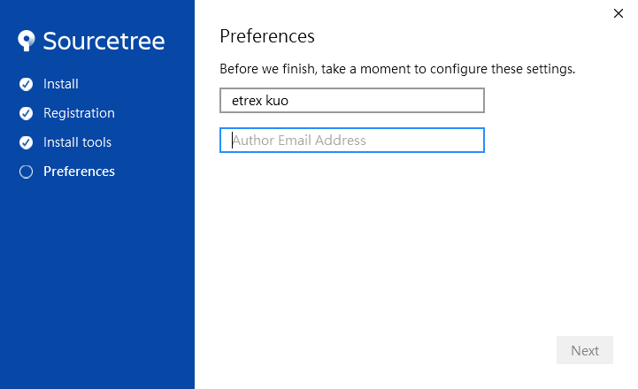
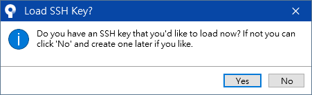
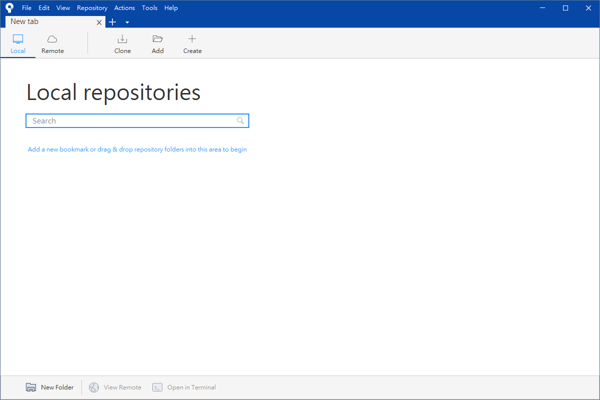
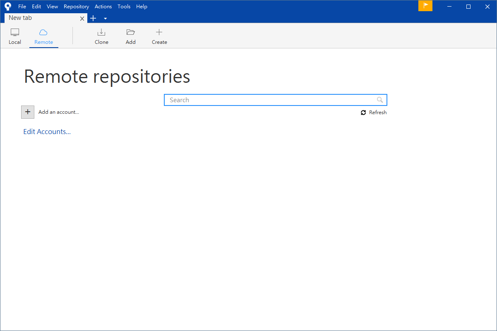
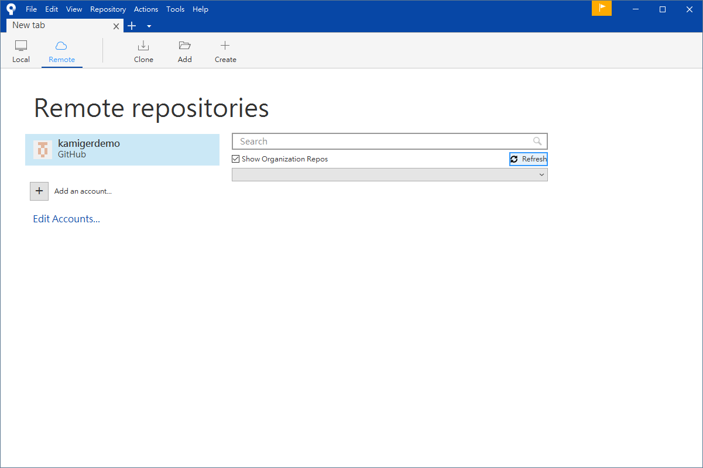
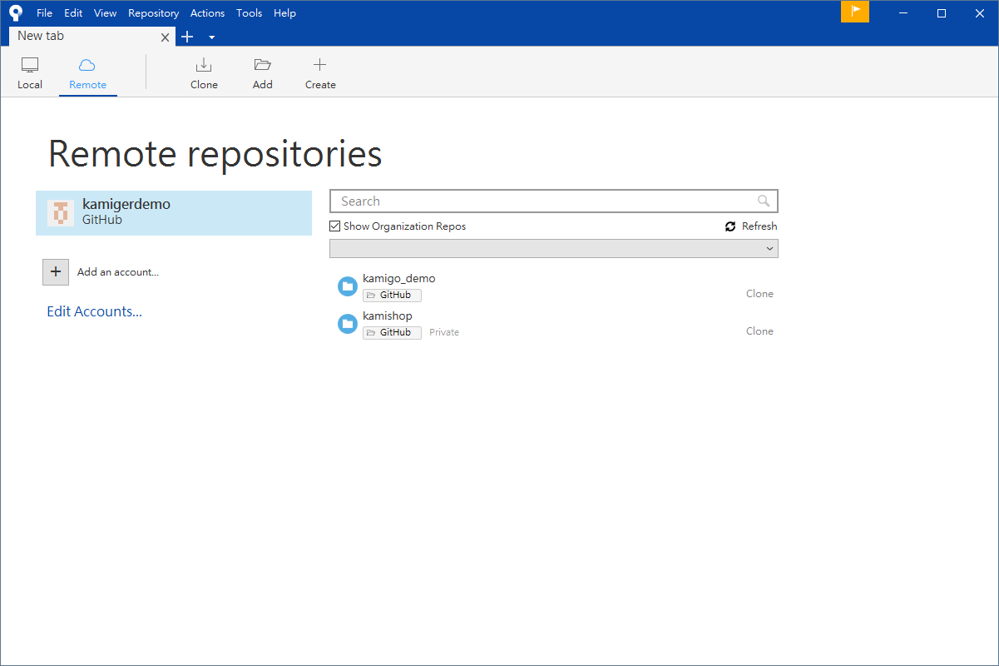

在 Windows 10 安裝 Sourcetree
開啟網頁 https://www.sourcetreeapp.com/：

點擊 Download for Windows：

同意條款並點擊 Download，下載安裝檔，下載完成後打開安裝檔：

點擊 Skip：

取消勾選 Mercurial 後，點擊 Next：

輸入顯示名稱以及 email 後，點擊 Next：

點擊 No：

至此已安裝完成，接下來要連結 GitHub 帳號。
連結 GitHub 帳號
點擊 Remote：

點擊 Add an account...：
點擊 Bitbucket，展開下拉式選單：
選擇 GitHub：
點擊 Refresh OAuth Token，會開啟一個授權網頁，如果你已經登入 GitHub 會看到下圖：

點擊 Authorize atlassian，授權 GitHub 相關權限給 Sourcetree。
看到 Username 以及下方的 Authentication OK 表示授權成功，點擊 OK。

點擊 Refresh 可以載入你在 GitHub 上的所有專案：

至此已完成與 GitHub 帳號的連結，可以透過 Sourcetree 順利上傳下載程式碼。